In the previous pages, we covered what a linear model is and how to fit a linear model. In this page, we will cover how to check a model fits the 4 key assumptions and what to do if it fails to meet an assumption.
To recap, the 4 key assumptions are:
Linearity - the systemic component is linear in parameters, that is, \[\mathbb{E}[Y] = \mathbb{E}[X\beta].\] Note that the explanatory variables do not have to be linear. They can be polynomials, log and more!
Homoscedasticity - the errors must have constant variance, i.e. \[Var(\epsilon_1) = Var(\epsilon_2) = \; ... \; = Var(\epsilon_{n+1}) = \sigma^2.\]
The errors are independent of each other.
The errors are normally distributed, \[\epsilon_i \sim \text{Normal}(0,\sigma^2) \;\; \forall i.\]
Generating data
We are going to create some data to illustrate good and bad model assumptions.
Code
```{r}###| For reproducability, we set a seedset.seed(419)###| Generating random numbersa <- runif(n = 100, min = 0, max = 10)b <- rpois(n = 100, lambda = 2)c <- runif(n = 100, min = -5, max = 10)###| Generating the response variablesy1 <- a + by2 <- a + b^2y3 <- log(a)###| Storing as a dataframedata <- data.frame("a" = a, "b" = b, "c" = c, "y1" = y1, "y2" = y2, "y3" = y3)###| First 6 rowshead(data)```
One way to test model assumptions is to look at the residual plots.
Note
A residual (or fitting deviation) is an estimate of the unobsereved statistical error. It is the difference between the observed \(y_i\) and the estimated \(\hat{y}_i\), the value predicted by the model residuals.
We want our model’s predictions to be as close to the true observed values as possible (i.e. we want to minimise the residuals). We also use the residuals to check if we are meeting the linearity and normality assumptions. We can also identify outliers this way.
A good model
To explore what ideal residual plots look like, we are going to exactly fit the model \[y1_i = a_i + b_i + \epsilon_i.\] Based on the way we have defined \(y1\) (y1 <- a + b), we know that this model should fit the data almost exactly. (The almost stems from the random noise from \(\epsilon\).) We plot several different diagnostic plots using the ‘plot()’ command.
We will explore each plot one by one.
Code
```{r}###| Fitting the modelm1 <- lm(y1 ~ a + b, data = data)###| Residual v fitted plotplot(m1, which = 1)```
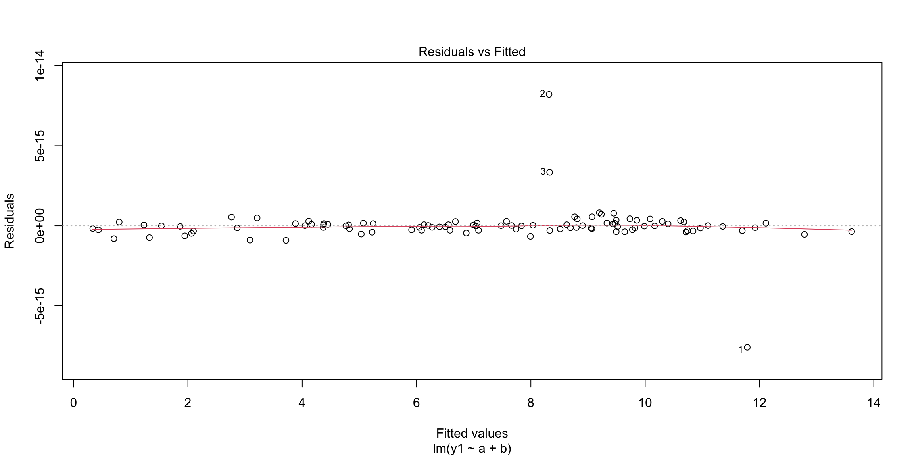
The residuals v fitted values plot is a scatter plot of with the residuals on the y-axis and the fitted/predicted values on the x-axis. The red line (called the smoother) is a curve fitted to the residuals. If the structural component of the model is correct (i.e. the explanatory variables and not the errors), the smoother will be horizontal around 0.
In this example, we see a very flat smoother, centered at 0, with 3 labelled points that deviate from the general trend.
Code
```{r}###| Q-Q plotplot(m1, which = 2)```
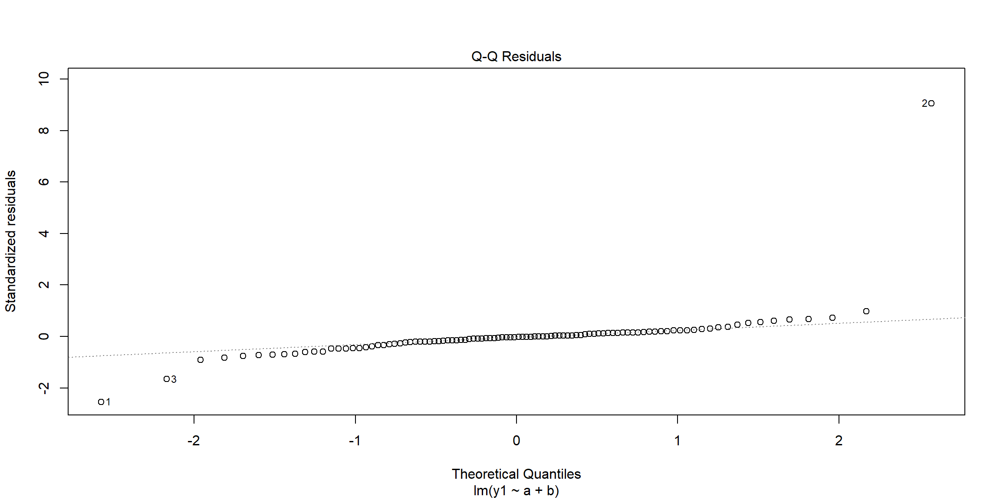
Recall that a model assumption is that the errors are normally distributed. The Q-Q plot allows us to check this assumption by plotting the absolute values of the standardized residuals on the y-axis and the theoretical quantiles of the standard half-normal distribution on the x-axis. If the errors are normally distributed, the dashed line will go through the origin and have a gradient of 1.
In this example, we see that the residuals do appear to be normally distributed, although at the tails, we do see 3 points that deviate from this.
Code
```{r}###| Cook's distance plotplot(m1, which = 4)```
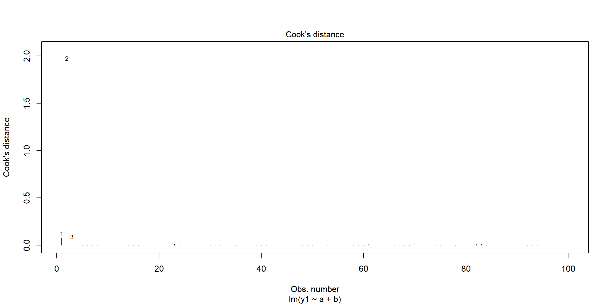
This graph plots the Cook’s distance against the observation number, with the largest 3 values labelled. The Cook’s distance can be thought of as a measure of the influence of a particular observation. That is, it summarises how much the model changes, when you do and don’t include the ith data point.
You may notice that we have skipped several plots, namely: the location-scale plot and the standardized resivual v leverage plot. More information about diasgnotstic plots can be found here for those interested.
A bad model
Now, let us purposefully fit a bad model to see how the diagnostic plots change.
Code
```{r}###| Bad model examplem2 <- lm(y2 ~ a + b, data=data)###| Residual v fitted plotplot(m2, which = 1)```
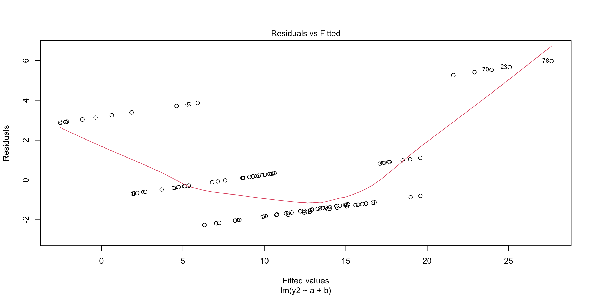
In the residuals v fitted values plot, we observe that the smoother has a parabolic shape. This indicates that there is a problem in how we have constructed our model - specifically we are failing to meet the linearity assumption. If we look back to how we defined y2 (y2 <- a + b^2), this makes sense. We cannot capture the \(b^2\) nature of our data if we are only using \(a+b\) as our explanatory variables.
Code
```{r}###| Q-Q plotplot(m2, which = 2)```
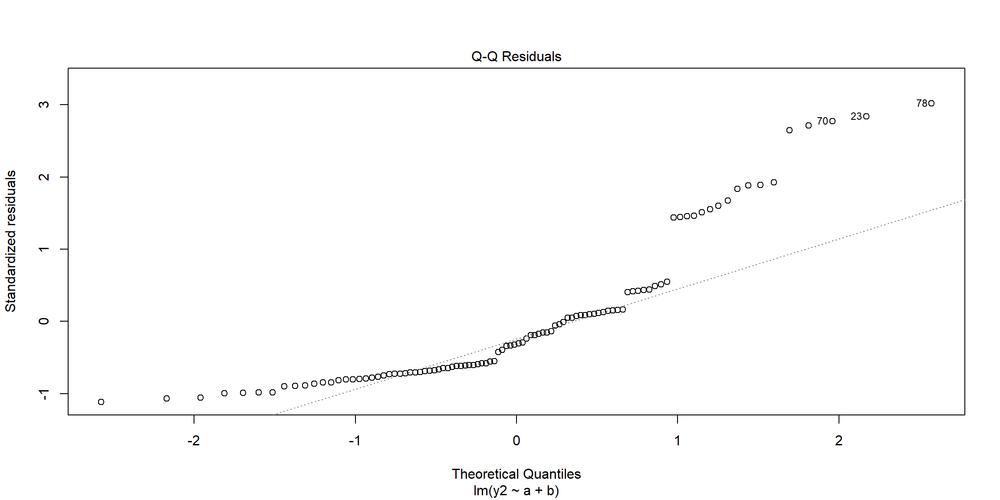
In the Q-Q plot, we note large deviations from the ideal dashed line at the upper tail. This indicates that our errors are not normally distributed, violating that assumption.
So, we conclude that \(y2_i = a_i + b_i +\epsilon_i\) is a bad model as it violates the key model assumptions. But, how do we fix this?
Transformations
On top of choosing which variables we include in our model, we can transform our variables to make the model fit better.
For example, in the \(y2\) case, we can create a new variable \(b2\) that is \(b^2\) and include this transformed variable into our model. However, by the principle of parsimony, we also need to include \(b\) into the model as well.
Code
```{r}###| Modeeling y2m3 <- lm(y2 ~ a + b + I(b^2), data = data)###| Residuals v fitted plotplot(m3, which = 1)```
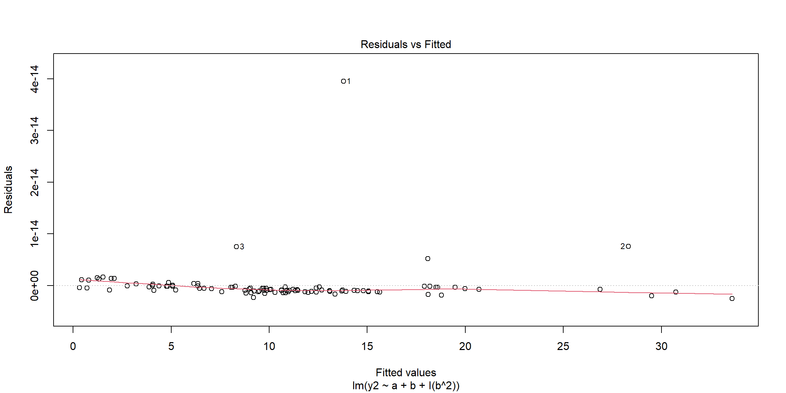
In the residuals plot, we observe a flat smoother. This indicates we are meeting the linearity assumption!
Code
```{r}###| Q-Q plotplot(m3, which = 2)```
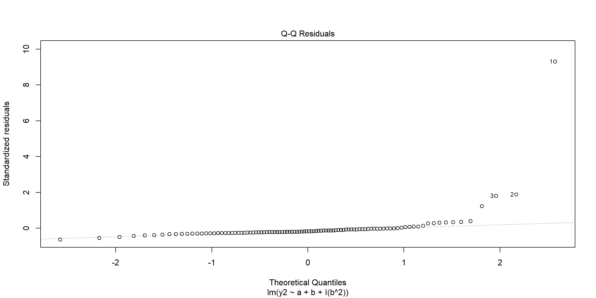
In the Q-Q plot, we see that the data follows the dashed line, baring 3 exceptions at the extreme. Thus, the model appears to meet the normally distributed errors assumption.
Another bad model
To further explore diagnostic plots, let us consider one more model: \[y3_i = a_i + \epsilon.\]
Code
```{r}###| y3 = am4 <- lm(y3 ~ a, data = data)###| Residual plotplot(m4, which = 1)```
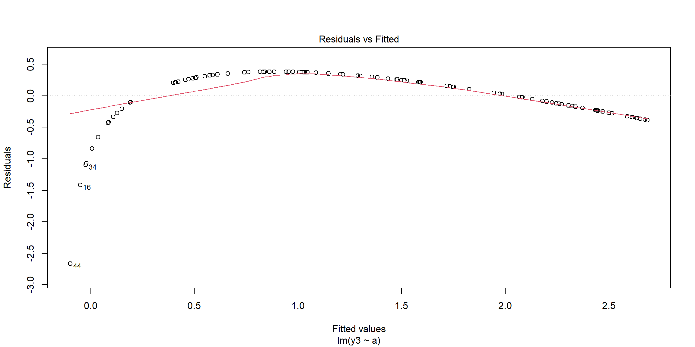
Fitting this model, we observe a curve shape in the smoother, indicating that we are violating the linearity assumption. As the shape is not symmetric, it doesn’t seem like this is can be corrected by using \(a^2\). Instead, we can try using a logarithm.
Code
```{r}###| y3 = log(a)m5 <- lm(y3 ~ log(a), data = data)###| Residual plotplot(m5, which = 1)```
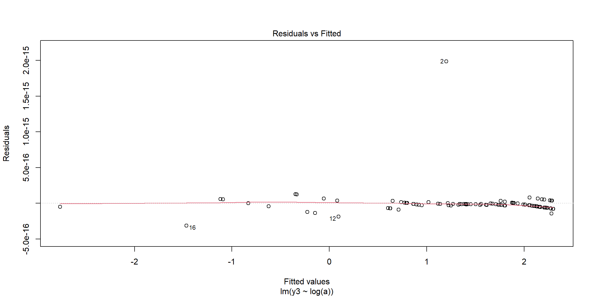
Now, we observe the correct behaviour of the smoother.
Diagnostic plots with noise
Thus far, we have used formulas to generate our response variables. This has resulted in very clearly defined behaviour from our models and diagnostic plots. However, in a normal scenario, the data we are given will have noise. So, we will add some normally distributed noise to our data and repeat the above.
To meet the assumptions, I have added normally distributed noise. However, this is often not the case and we often need to use a generalised linear model to account for this.
A good model revisited
Once again, we will fit the model \[y1_i = a_i + b_i + \epsilon_i.\] However, we will use the noisy dataset.
Code
```{r}###| y1 modelM1 <- lm(y1 ~ a + b, data = data2)plot(M1,which=1)plot(M1, which = 2)```
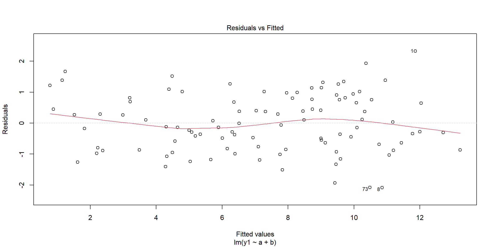
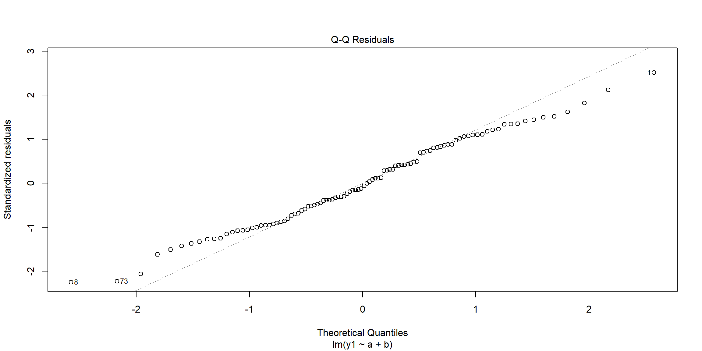
Now, there is a lot more variation in the residuals. However, we still observe a roughly flat smoother so the model does not appear to be violating the linearity assumption.
The Q-Q plot still follows the ideal general trend, although the tails deviate slightly more.
A bad model revisited
Now, we fit both of the following models: \[\begin{align}
y2_i & = a_i + b_i + \epsilon_i, \\
y2_i & = a_i + b_i + b_i^2 + \epsilon_i.
\end{align}\]
Note
I have placed the graphs side by side for comparison using the par(mfrow = c(1,2))) command. More information about this, and graphics more generally, appears here.
Code
```{r}###| a + bM2 <- lm(y2 ~ a + b, data = data2)###| a + b + b^2M3 <- lm(y2 ~ a + b + I(b^2), data = data2)###| Plotting graphs side by sidepar(mfrow = c(1, 2))plot(M2,which=1)plot(M3,which=1)```
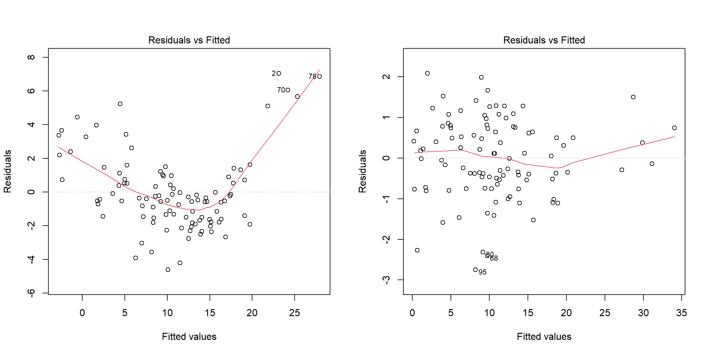
Code
```{r}###| Plotting graphs side by sidepar(mfrow = c(1, 2))plot(M2, which = 2)plot(M3, which = 2)```
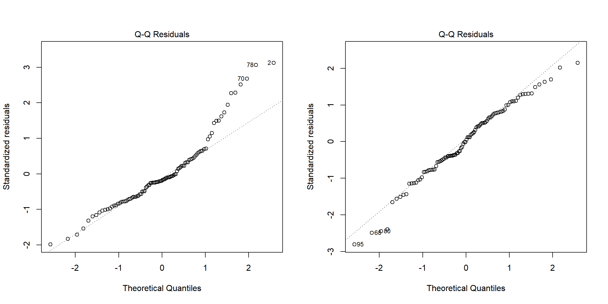
In the residuals plot, we see the same general trends in behaviour that we saw before. The graph on the left, fitted with \(a+b\), displays the problematic parabolic behaviour in the smoother. The graph on the right, fitted with \(a+b+b^2\), has a flatter smoother.
Similarly, in the Q-Q plots, we observe that the left graph deviates at the tails more than the right graph.
Another bad model revisited
Now, we fit both of the following models: \[\begin{align}
y2_i & = a_i \epsilon_i, \\
y2_i & = \log(a_i) + \epsilon_i.
\end{align}\]
Again, for ease, I have plotted the graphs side by side.
Code
```{r}###| a M4 <- lm(y3 ~ a, data = data2)###| log(a)M5 <- lm(y3 ~ log(a), data = data2)###| Plotting graphs side by sidepar(mfrow = c(1, 2))plot(M4,which=1)plot(M5,which=1)plot(M4, which = 2)plot(M5, which = 2)```
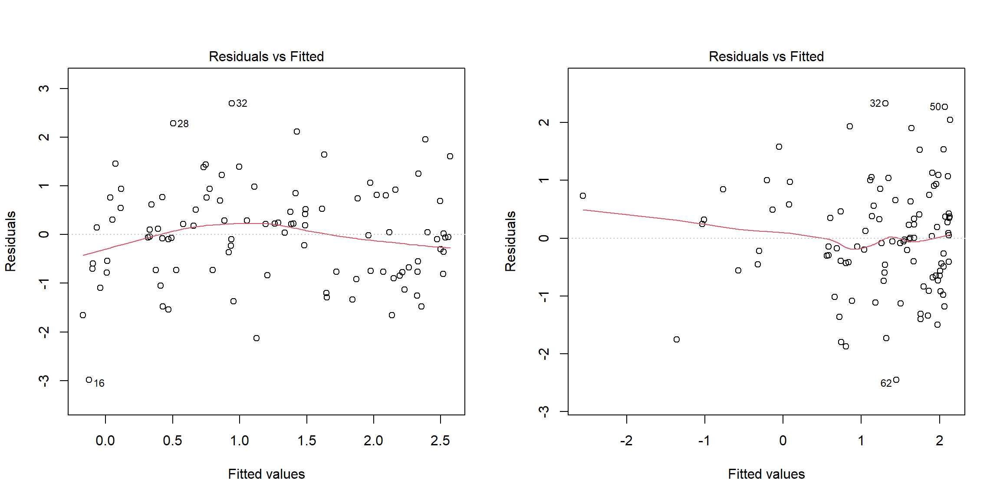
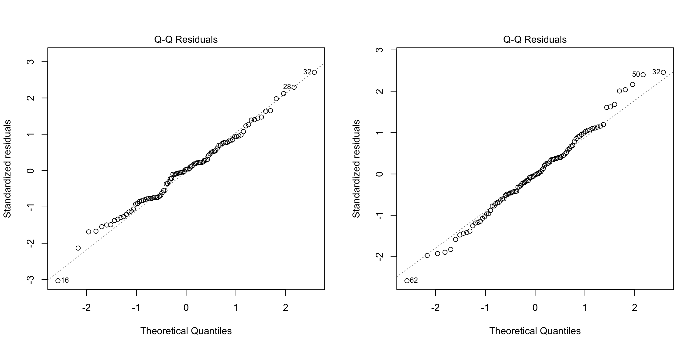
This time, it is much less clear which of these two models is better.
Comparing the Q-Q plots, the left graph appears to deviate more on the lower tail. So, the \(\log(a)\) model appears to better meet the normality assumption.
However, both models have issues with the smoother in the residuals v fitted graphs. For the \(y3 ~ a\) model, there is a general curve shape to the smoother and residuals that violates the linearity assumption. While this appears to be fixed somewhat by using \(\log(a)\) instead, now the residuals get further and further away from the smoother and the fitted values get larger. (This shape is known as a megaphone.) This violates the assumption that the errors have constant variance.
Thus, we conclude that it appears neither model is a good fit.
Source Code
---title: "Model diagnostics"author: name: Maria-Louiza Van den Bergh email: maria-louiza.van-den-bergh@warwick.ac.ukformat: html: fig-width: 12 fig-height: 6 code-fold: show code-tools: true code-block-bg: true code-block-border-left: "#31BAE9" toc: true code-copy: true number_sections: true echo: fenced---In the previous pages, we covered what a linear model is and how to fit a linear model. In this page, we will cover how to check a model fits the 4 key assumptions and what to do if it fails to meet an assumption.To recap, the 4 key assumptions are:<div>1. **Linearity** - the systemic component is linear in parameters, that is, $$\mathbb{E}[Y] = \mathbb{E}[X\beta].$$ Note that the explanatory variables do not have to be linear. They can be polynomials, log and more!2. **Homoscedasticity** - the errors must have constant variance, i.e. $$Var(\epsilon_1) = Var(\epsilon_2) = \; ... \; = Var(\epsilon_{n+1}) = \sigma^2.$$3. The errors are **independent** of each other.4. The errors are **normally distributed**, $$\epsilon_i \sim \text{Normal}(0,\sigma^2) \;\; \forall i.$$</div># Generating dataWe are going to create some data to illustrate good and bad model assumptions.```{r}###| For reproducability, we set a seedset.seed(419)###| Generating random numbersa <-runif(n =100, min =0, max =10)b <-rpois(n =100, lambda =2)c <-runif(n =100, min =-5, max =10)###| Generating the response variablesy1 <- a + by2 <- a + b^2y3 <-log(a)###| Storing as a dataframedata <-data.frame("a"= a,"b"= b,"c"= c,"y1"= y1,"y2"= y2,"y3"= y3)###| First 6 rowshead(data)```# Diagnostic plotsOne way to test model assumptions is to look at the residual plots.::: callout-noteA residual (or fitting deviation) is an estimate of the unobsereved statistical error. It is the difference between the observed $y_i$ and the estimated $\hat{y}_i$, the value predicted by the model [residuals](https://en.wikipedia.org/wiki/Errors_and_residuals).:::We want our model's predictions to be as close to the true observed values as possible (i.e. we want to minimise the residuals). We also use the residuals to check if we are meeting the linearity and normality assumptions. We can also identify outliers this way.## A good modelTo explore what ideal residual plots look like, we are going to exactly fit the model $$y1_i = a_i + b_i + \epsilon_i.$$ Based on the way we have defined $y1$ (`y1 <- a + b`), we know that this model should fit the data almost exactly. (The almost stems from the random noise from $\epsilon$.) We plot several different diagnostic plots using the 'plot()' command.We will explore each plot one by one.```{r}###| Fitting the modelm1 <-lm(y1 ~ a + b, data = data)###| Residual v fitted plotplot(m1, which =1)```The **residuals v fitted values plot** is a scatter plot of with the residuals on the y-axis and the fitted/predicted values on the x-axis. The red line (called the smoother) is a curve fitted to the residuals. If the structural component of the model is correct (i.e. the explanatory variables and not the errors), the smoother will be horizontal around 0.In this example, we see a very flat smoother, centered at 0, with 3 labelled points that deviate from the general trend.```{r}###| Q-Q plotplot(m1, which =2)```Recall that a model assumption is that the errors are normally distributed. The **Q-Q plot** allows us to check this assumption by plotting the absolute values of the standardized residuals on the y-axis and the theoretical quantiles of the standard half-normal distribution on the x-axis. If the errors are normally distributed, the dashed line will go through the origin and have a gradient of 1.In this example, we see that the residuals do appear to be normally distributed, although at the tails, we do see 3 points that deviate from this.```{r}###| Cook's distance plotplot(m1, which =4)```This graph plots the **Cook's distance** against the observation number, with the largest 3 values labelled. The [Cook's distance](https://www.statisticshowto.com/cooks-distance/) can be thought of as a measure of the influence of a particular observation. That is, it summarises how much the model changes, when you do and don't include the ith data point.You may notice that we have skipped several plots, namely: the location-scale plot and the standardized resivual v leverage plot. More information about diasgnotstic plots can be found [here](https://library.virginia.edu/data/articles/diagnostic-plots) for those interested.## A bad modelNow, let us purposefully fit a bad model to see how the diagnostic plots change.```{r}###| Bad model examplem2 <-lm(y2 ~ a + b, data=data)###| Residual v fitted plotplot(m2, which =1)```In the residuals v fitted values plot, we observe that the smoother has a parabolic shape. This indicates that there is a problem in how we have constructed our model - specifically we are failing to meet the linearity assumption. If we look back to how we defined y2 (`y2 <- a + b^2`), this makes sense. We cannot capture the $b^2$ nature of our data if we are only using $a+b$ as our explanatory variables.```{r}###| Q-Q plotplot(m2, which =2)```In the Q-Q plot, we note large deviations from the ideal dashed line at the upper tail. This indicates that our errors are not normally distributed, violating that assumption.So, we conclude that $y2_i = a_i + b_i +\epsilon_i$ is a bad model as it violates the key model assumptions. But, how do we fix this?## TransformationsOn top of choosing which variables we include in our model, we can transform our variables to make the model fit better.For example, in the $y2$ case, we can create a new variable $b2$ that is $b^2$ and include this transformed variable into our model. However, by the principle of parsimony, we also need to include $b$ into the model as well.```{r}###| Modeeling y2m3 <-lm(y2 ~ a + b +I(b^2), data = data)###| Residuals v fitted plotplot(m3, which =1)```In the residuals plot, we observe a flat smoother. This indicates we are meeting the linearity assumption!```{r}###| Q-Q plotplot(m3, which =2)```In the Q-Q plot, we see that the data follows the dashed line, baring 3 exceptions at the extreme. Thus, the model appears to meet the normally distributed errors assumption.## Another bad modelTo further explore diagnostic plots, let us consider one more model: $$y3_i = a_i + \epsilon.$$```{r}###| y3 = am4 <-lm(y3 ~ a, data = data)###| Residual plotplot(m4, which =1)```Fitting this model, we observe a curve shape in the smoother, indicating that we are violating the linearity assumption. As the shape is not symmetric, it doesn't seem like this is can be corrected by using $a^2$. Instead, we can try using a logarithm.```{r}###| y3 = log(a)m5 <-lm(y3 ~log(a), data = data)###| Residual plotplot(m5, which =1)```Now, we observe the correct behaviour of the smoother.# Diagnostic plots with noiseThus far, we have used formulas to generate our response variables. This has resulted in very clearly defined behaviour from our models and diagnostic plots. **However, in a normal scenario, the data we are given will have noise.** So, we will add some normally distributed noise to our data and repeat the above. ```{r}###| Adding noisedata2 <- data data2$y1 <- data2$y1 +rnorm(n =100, mean =0, sd =1)data2$y2 <- data2$y2 +rnorm(n =100, mean =0, sd =1)data2$y3 <- data2$y3 +rnorm(n =100, mean =0, sd =1)```:::{.callout-note}To meet the assumptions, I have added normally distributed noise. However, this is often not the case and we often need to use a generalised linear model to account for this.:::## A good model revisitedOnce again, we will fit the model $$y1_i = a_i + b_i + \epsilon_i.$$ However, we will use the noisy dataset.```{r}###| y1 modelM1 <-lm(y1 ~ a + b, data = data2)plot(M1,which=1)plot(M1, which =2)```Now, there is a lot more variation in the residuals. However, we still observe a roughly flat smoother so the model does not appear to be violating the linearity assumption.The Q-Q plot still follows the ideal general trend, although the tails deviate slightly more.## A bad model revisitedNow, we fit both of the following models: \begin{align}y2_i & = a_i + b_i + \epsilon_i, \\y2_i & = a_i + b_i + b_i^2 + \epsilon_i.\end{align}:::{.callout-note}I have placed the graphs side by side for comparison using the `par(mfrow = c(1,2)))` command. More information about this, and graphics more generally, appears [here](https://intro2r.com/mult_graphs.html).:::```{r}###| a + bM2 <-lm(y2 ~ a + b, data = data2)###| a + b + b^2M3 <-lm(y2 ~ a + b +I(b^2), data = data2)###| Plotting graphs side by sidepar(mfrow =c(1, 2))plot(M2,which=1)plot(M3,which=1)``````{r}###| Plotting graphs side by sidepar(mfrow =c(1, 2))plot(M2, which =2)plot(M3, which =2)```In the residuals plot, we see the same general trends in behaviour that we saw before. The graph on the left, fitted with $a+b$, displays the problematic parabolic behaviour in the smoother. The graph on the right, fitted with $a+b+b^2$, has a flatter smoother.Similarly, in the Q-Q plots, we observe that the left graph deviates at the tails more than the right graph.## Another bad model revisitedNow, we fit both of the following models: \begin{align}y2_i & = a_i \epsilon_i, \\y2_i & = \log(a_i) + \epsilon_i.\end{align}Again, for ease, I have plotted the graphs side by side.```{r}###| a M4 <-lm(y3 ~ a, data = data2)###| log(a)M5 <-lm(y3 ~log(a), data = data2)###| Plotting graphs side by sidepar(mfrow =c(1, 2))plot(M4,which=1)plot(M5,which=1)plot(M4, which =2)plot(M5, which =2)```This time, it is much less clear which of these two models is better.Comparing the Q-Q plots, the left graph appears to deviate more on the lower tail. So, the $\log(a)$ model appears to better meet the normality assumption.However, both models have issues with the smoother in the residuals v fitted graphs. For the $y3 ~ a$ model, there is a general curve shape to the smoother and residuals that violates the linearity assumption. While this appears to be fixed somewhat by using $\log(a)$ instead, now the residuals get further and further away from the smoother and the fitted values get larger. (This shape is known as a megaphone.) This violates the assumption that the errors have constant variance.Thus, we conclude that it appears neither model is a good fit.